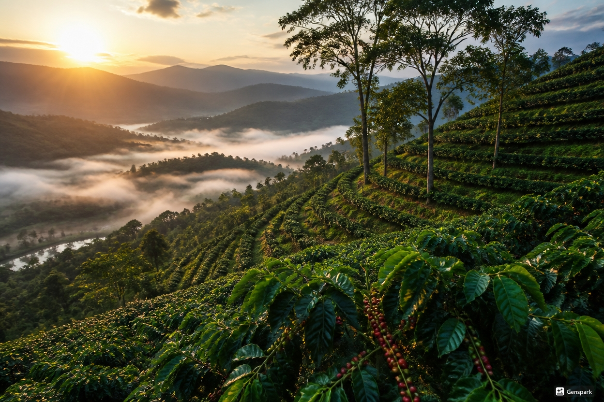
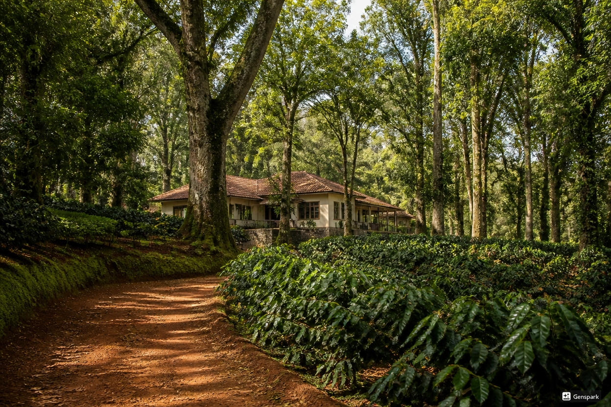
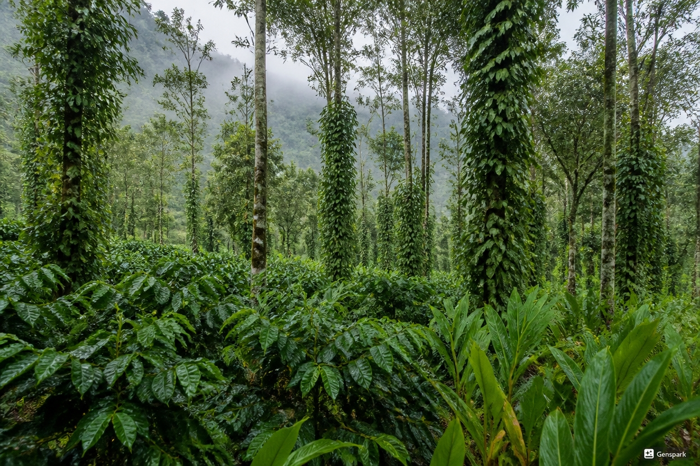
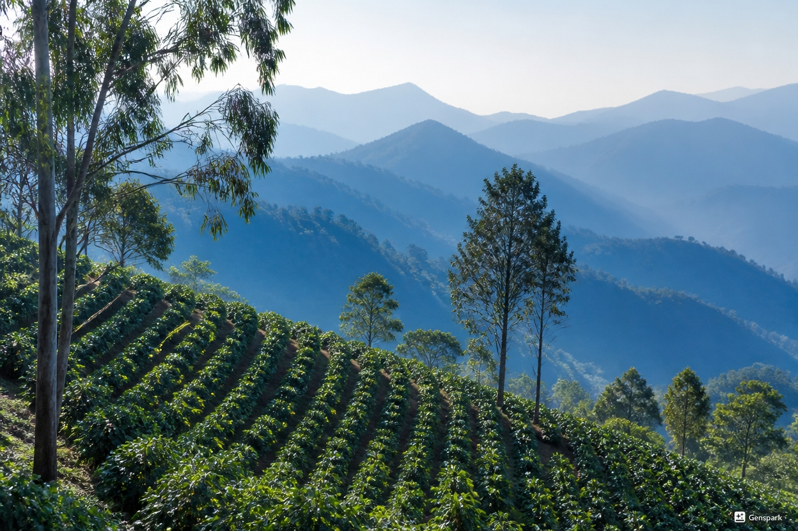

Araku Valley — Medium Roast
Tasting notes: hazelnut, cocoa, soft orange
A gentle, balanced daily cup from tribal-run farms high in the Eastern Ghats.
Small-Batch · Single-Origin · Indian Farms
Small-batch roasted specialty coffee, sourced from remarkable farms across India.
Six coffees from across India, each roasted in batches of 12 kg or less and shipped within days of the roast.

Tasting notes: hazelnut, cocoa, soft orange
A gentle, balanced daily cup from tribal-run farms high in the Eastern Ghats.

Tasting notes: jasmine, lemon zest, honey
A bright washed coffee from one of India's oldest planting districts.

Tasting notes: dark chocolate, cardamom, brown sugar
A full-bodied coffee grown beneath spice vines in monsoon-washed hills.

Tasting notes: white peach, black tea, cane sugar
A delicate high-altitude coffee with the clarity of cool mountain nights.

Tasting notes: caramel, orange blossom, almond
A mellow, sweet cup with a clean finish, crafted for slow mornings and bright espresso pours.

Tasting notes: dark berry, cocoa nib, brown sugar
A concentrated roast made for espresso and milk drinks, balancing sweetness with a structured finish.
We are a small roastery by choice. Everything we do follows from four simple commitments.
Never more than 12 kg per batch, so every bean roasts evenly and every bag leaves the roastery at its best.
We buy directly from independent growers and pay well above the commodity price for exceptional lots.
Your coffee is roasted after you order and shipped with the roast date printed on every bag.
Farm, altitude, varietal and process on every label — you always know exactly what you're brewing.
We cup dozens of samples each harvest and select only the lots that show a clear sense of their region.
We buy directly from independent farms in Araku Valley, Chikmagalur, Coorg and the Nilgiri Hills — at prices agreed openly with growers.
Each lot gets its own roast profile in small batches, developed on the sample roaster before it ever meets the production drum.
Every bag ships with brewing guidance, and our brewing guide walks you through pour over, French press, AeroPress and more.
India's coffee grows under shade, on misty slopes, almost entirely in the southern hill ranges. These are the four regions we call home.
High-altitude lots from tribal-run farms in the Eastern Ghats of Andhra Pradesh.
900–1,300 m elevationWhere Indian coffee began. Heritage estates with deep, well-drained forest soil.
1,000–1,500 m elevationMonsoon-washed hills where coffee grows alongside cardamom and pepper.
900–1,400 m elevationSlow-ripening cherries in the cool air of the Blue Mountains of Tamil Nadu.
1,200–1,800 m elevation